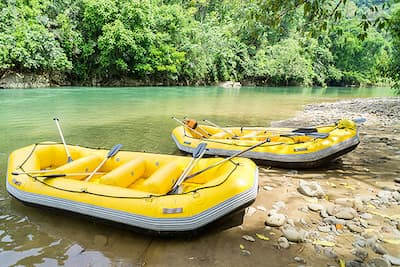
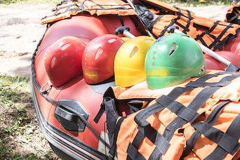
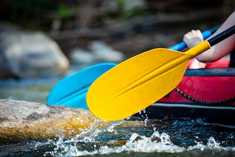

Down the River Whitewater Adventures
Our Most Popular Trips
Devil's Gate
Devil's Gate is a full-day adventure on the Snake River. This trip is enjoyed by beginners and skilled rafters alike. We start our day in Island Park and end in Idaho Falls, where our coach will be waiting to take you back. Rapids are interspersed with calm floats where beautiful scenery can be enjoyed. We often spot wildlife from otters to bald eagles, so have your water-proof camera ready! This trip is best for children over the age of 8 and adults of any skill level. Price includes lunch, dinner, equipment, and transportation back to Island Park.
Big Mallard
Our most beginner- and family-friendly trip to date! Big Mallard is a half-day adventure on the Henry's Fork section of the Snake River. This trip includes some mild rapids and a lot of floating, as well as a stop for a picnic lunch. Scenery and wildlife abound! Price includes equipment, lunch, and transportation back to Island Park at the end of the trip. This is our best trip for children (ages 3+) or for those with mobility issues.
Smith's Flat
Smith's Flat is our most popular rafting trip among highly-skilled rafters. This overnight adventure starts in Jackson, Wyoming and ends in American Falls, Idaho. This route takes rafters through some of the most adventurous white water passages available on the Snake River and is not for the faint of heart! This trip is only available to experienced rafters over 18. Price includes 5 meals, equipment, and transportation back to the launch site.
| Full Trip Offerings | |||
|---|---|---|---|
| Trip Name | Description | Skill Level | Price per Person |
| Devil's Gate | Full day, Island Park to Idaho Falls | Intermediate | $99 |
| Big Mallard | Half Day at Henry's Fork | Beginner | $59 |
| Smith's Flat | Two-day, Jackson to American Falls | Advanced | $249 |
| Los Dientes del Diablo | Full day, Boise to Lewiston | Advanced | $119 |
| Half-day Adventure | Half-day, Boise area | Beginner | $59 |
| Falls Float | Full day, Twin Falls to Idaho Falls | Intermediate | $149 |